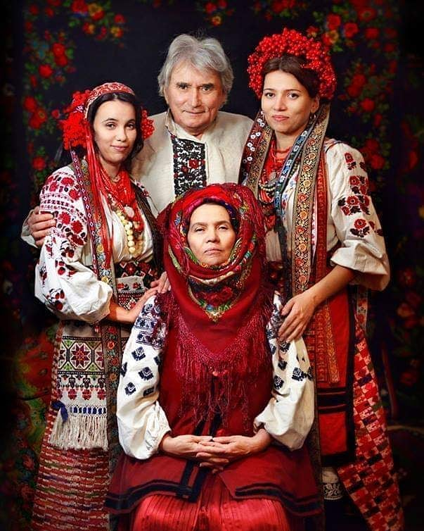
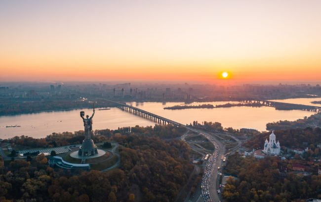

Області України
- АР Крим
- Вінницька
- Волинська
- Дніпропетровська
- Донецька
- Житомирська
- Закарпатська
- Запорізька
- Івано-Франківська
- Київська
- Кіровоградська
- Луганська
- Львівська
- Миколаївська
- Одеська
- Полтавська
- Рівненська
- Сумська
- Тернопільська
- Харківська
- Херсонська
- Хмельницька
- Черкаська
- Чернівецька
- Чернігівська
Національний одяг
Вишиванка
Виши́ва́нка— новітня назва народної руської (українськоїта білоруської) сорочки, прикрашеної орнаментованою вишивкою. Важлива складова українського національного вбрання. Поділяється на жіночі й чоловічі сорочки. Має спільне походження з вишитими сорочками слов'янських народів Східної та Центральної Європи. Від часів середньовіччя традиційно носилася як повсякденний та святковий одяг. З XX століття носиться окремо, разом з костюмом, як святковий, патріотичний та культовий одяг. Традиційна вишивка сорочок має оберегове значення й різниться залежно від регіону. Традиційні назви — соро́чка, ви́шита соро́чка, виши́вана соро́чка.
Столиця - Київ
Ки́їв — столиця та найбільше місто України. Розташований у середній течії Дніпра, у північній Наддніпрянщині. Політичний, соціально-економічний, транспортний, освітньо-науковий, історичний, культурний та духовний центр України. У системі адміністративно-територіального устрою України Київ має спеціальний статус, визначений Конституцією, і не входить до складу жодної області, хоча і є адміністративним центром Київської області[8]. Місце розташування центральних органів влади України, іноземних місій, штаб-квартир більшості підприємств і громадських об'єднань, що працюють в Україні.